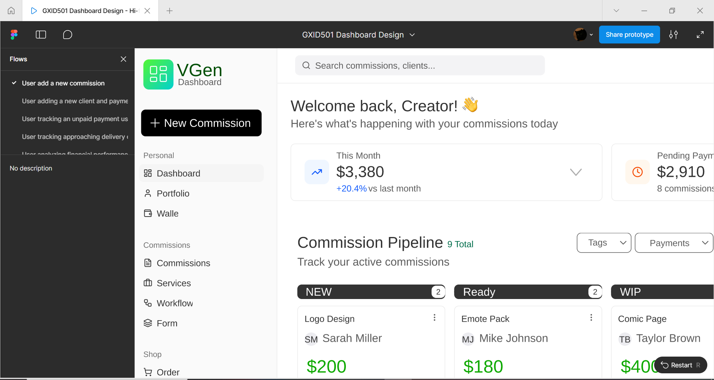
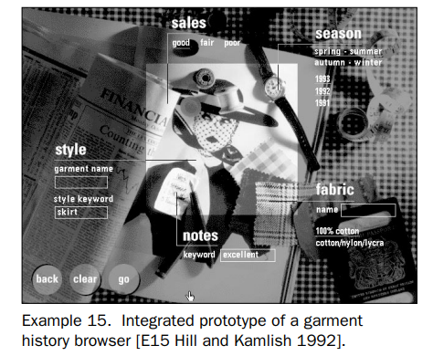

Here consists two readings, where three of their quotes will be highlighted with a few thoughts regard on them.
Quote 1:For a field rooted in the fine arts, this has been a difficult transition. Many graphic design schools have resorted to teaching a waterfall philosophy where students are positioned to think of themselves as creatives who come up with ideas for others to build. After all, this is easier than adopting a whole new set of processes. However, the fundamental problem with this approach is that static design tools like Illustrator and Sketch fail at prototyping digital systems.
This quote is insightful because it makes me think about how, when I was in UX classes, we always just talked about how to implement a clickable prototype in Figma without considering how that prototype would be built through the programming process. While thinking about how knowing programming can make a difference in developing a product, I am reminded of a designer-versus-programmer meme I have seen. We should consider, instead of focusing just on graphics, introducing programming and other digital system design toolkits to minimize the gap between design and development.
Quote 2:Variations of a design can be tested much faster during the prototyping phase, and randomization can be used to reveal designs that the designer would never have created with a pencil.
As I read the quote, I recalled the responsive page design we practiced in class. When I was testing my dashboard prototype during user testing last week, I realized that the participant’s screen was much smaller than mine, so she had some trouble seeing the whole dashboard until she maximized the Figma prototype window. At the moment, she asked whether I can make that page responsive (in her words, “can you make it with sizes for different screens?), where I had to tell her that I am not capable of doing that on Figma. I do believe that designing my dashboard with code, in combination with a design system, can help me make my prototype responsive and avoid similar issues in the future.
Quote 3:Those with a focus on code and generative design that do not teach graphic design principles at all, and those celebrating computational design as a spectacle without identifying how projects are made or why they are successful. There is a need for educational material that teaches the fundamentals of graphic design in a modern way, especially if it also gives students mental models for critiquing digital design projects.
I like how the author thoroughly explains why both programming skills and design principles are essential for product implementation, and then highlights why they wrote this book to help designers transition to the modern mental model. I do agree that there is a considerable gap between coding and design, as someone who came from an IT and Tech background and is now emerging into design. I would love to read more about this book to see how this author combines both to close that gap.
Quote 1:However, Ehn and Kyng (1991) have shown that even prototypes made of cardboard are very useful for user testing. In the authors’ experience, no one tool supports iterative design work in all of the important areas of investigation. To design well, designers must be willing to use different tools for different prototyping tasks; and to team up with other people with complementary skills.
I agree with Houde and Hill that it is tricky to conduct user testing with a single tool. From our design class, we were asked to test our clickable prototype before delivering; however, before actually conducting the testing, I actually conducted one usability test with my low-fi wireframes, because I know that if I started developing a clickable prototype without testing for user feedback first, the follow-up changes could be hideous. I am happy that I used both wireframe sketches and high-fidelity prototypes for testing, achieving maximum efficiency in a week. I therefore deeply resonate with what they have said here.
Quote 2:We interpret resolution to mean “amount of detail”, and fidelity to mean “closeness to the eventual design”. It is important to recognize that the degree of visual and behavioral refinement of a prototype does not necessarily correspond to the solidity of the design, or to a particular stage in the process.
I like how they define the resolution (high, medium, low) and fidelity, which helps clarify the terms and processes. I also like how they point out
that it is crucial to recognize that what is most important in this process is how users can accomplish tasks without hassle, rather than thinking that the
design will get better eventually after visuals and details are added. We, as designers, should focus on achieving our goals throughout all processes.
I also like how they showcase the design triangle to better illustrate the design value.
Quote 3:TIn retrospect the designers had mixed feelings about it. It was highly motivating to users to be able to manipulate real user data through a novel user interface, and much was learned about the design. However, the designers also felt that they had to invest a large amount of time in making the prototype, yet had only been able to support a very narrow role compared to the breadth shown in the animation shown in Example 8. Many broader design questions remained unanswered.
When I was reading about the Integrated prototype of a garment History browser, I had my doubts as well. Overall, it looks aesthetically stunning, allowing users to navigate and manipulate their data through a novel user interface. Still, it would likely take a lot of time, resources, and effort to implement the prototype. Yet, despite the resources it costs, it remains a very shallow, aesthetic-focused design. However, it is a trick question; although the two designers felt discouraged by it, as long as their users like it, it is still worth it, as it can be treated as a design trade-off. After all, it is always about what goal you want to achieve with your prototype, not just functionality.
